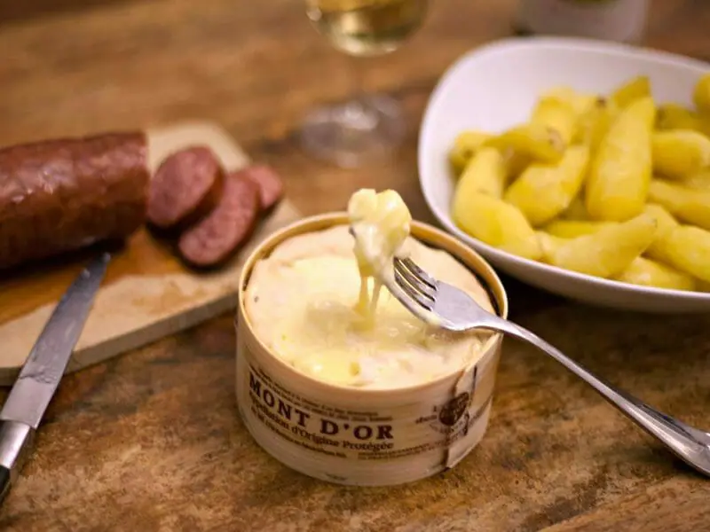

Saucisse de Morteau - Mont d'Or

Plat emblématique de la Franche-Comté, la saucisse de Morteau accompagnée de Mont d’Or illustre parfaitement la richesse et la générosité de la gastronomie régionale. Cette alliance de produits typiques offre une expérience conviviale, idéale pour les repas d’hiver. Simple et chaleureuse, cette recette séduit par son authenticité. La saucisse de Morteau, reconnaissable à son goût fumé et à sa texture fondante, contraste parfaitement avec le Mont d’Or, fromage crémeux et délicatement parfumé, coulant après un passage au four. Traditionnellement servi avec des pommes de terre vapeur, ce plat met en valeur des ingrédients bruts et de qualité. Le Mont d’Or, cuit dans sa boîte, devient onctueux et enveloppant, apportant une touche gourmande qui sublime la puissance aromatique de la saucisse. Facile à préparer, ce plat convivial ne nécessite que peu d’ingrédients et s’inscrit dans la tradition des repas partagés. Il incarne une cuisine de terroir, simple mais raffinée, qui privilégie les saveurs authentiques et le plaisir de se retrouver autour de la table. Pour accompagner ce mets typiquement comtois, on privilégiera un vin blanc sec du Jura, comme un Savagnin ou un Chardonnay. Leur fraîcheur et leur vivacité équilibrent la richesse du Mont d’Or et le caractère fumé de la saucisse. Pour ceux qui préfèrent le vin rouge, un vin léger et peu tannique, comme un Poulsard, pourra également convenir. Il accompagnera le plat avec délicatesse, sans masquer les saveurs subtiles du fromage et de la charcuterie.